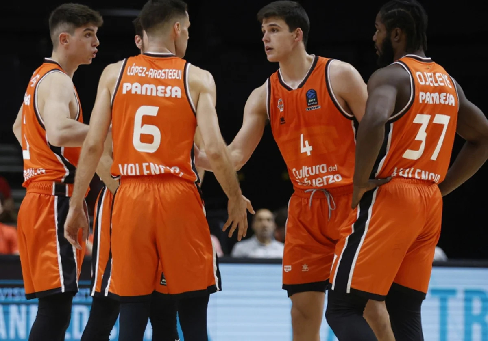

Valencia baja a segunda
El valencia tras perder todos los partidos por paliza se van para segunda

La ampliación a 20 equipos, abriría las puertas de la Euroliga al Valencia Basket
La Euroliga está estudiando la posibilidad de ampliar la competición a 20 equipos para la temporada 2025-26
NoticiaLa NBA quiere seducir al Valencia Basket para su futura competición en Europa
Los gestores analizan a los clubes que no tengan ataduras con la Euroliga como uno de los nichos de mercado y el proyecto taronja, con el Roig Arena, es una opción en estudio.
NoticiaValencia Basket visita la siempre complicada pista del MoraBanc Andorra
El primer equipo masculino de Valencia Basket afronta su segunda salida de la semana para visitar la pista del MoraBanc Andorra (sábado 1, 20:45h, Pavelló Toni Martí, Movistar+ Deportes)
Noticia